Σημειώσεις, Βοηθήματα
Μαθηματικών, Φυσικής και Χημείας, 18 Οκτ, 2025

Γιατί οι σωστές σημειώσεις μπορούν να βοηθήσουν...
Είναι αλήθεια ότι οι καλές σημειώσεις μπορούν να βοηθήσουν τους μαθητές πολύπλευρα. Οι σημειώσεις που είναι ευπαρουσίαστες με σωστά σχεδιασμένο περιεχόμενο προδιαθέτουν ευνοϊκά τον μαθητή ή την μαθήτρια απέναντι στο μάθημα και επεξηγούν στοχευμένα τα δυσνόητα σημεία ώστε παράλληλα με την δια ζώσης διδασκαλία και το σχολικό βιβλίο ο μαθητής να κερδίζει συνεχώς έδαφος στο γνωστικό και ψυχολογικό τομέα.
Στον σύνδεσμο που ακολουθεί θα βρείτε σημειώσεις και βοηθήματα για τις τάξεις του Γυμνασίου και του Λυκείου που μπορείτε να "κατεβάσετε" ελεύθερα.
Κουμουνδούρος Γιάννης
Το σύστημα πρόσβασης στην τριτοβάθμια εκπαίδευση 2026
Πανελλαδικές 2026, 16 Οκτ, 2026

Το εκπαιδευτικό σύστημα άλλαξε σχετικά με τον αριθμό των μαθημάτων, τις νέες κατευθύνσεις και τον τρόπο υπολογισμού των μορίων για την εισαγωγή στην τριτοβάθμια εκπαίδευση. Στην Γ' Λυκείου έχουμε,
- τρεις ομάδες προσανατολισμού,
- τέσσερα επιστημονικά πεδία,
- σχολές ανά επιστημονικό πεδίο,
- τέσσερα πανελλαδικά εξεταζόμενα μαθήματα,
- ελάχιστη βάση εισαγωγής,
- συντελεστές βαρύτητας,
- παράλληλο μηχανογραφικό,
- πρόγραμμα πανελλαδικών 2026
- εξεταστέα ύλη πανελλαδικών 2026
- βάσεις 2025 και άλλα στατιστικά στοιχεία
Κουμουνδούρος Γιάννης
Πρόγραμμα Πανελλαδικών 2026
Πανελλαδικές 2026, 18 Οκτ, 2026
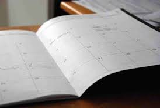
Αναρτήθηκε το πρόγραμμα των πανελλαδικών εξετάσεων για το 2026 από το Υπουργείο Παιδείας.
Πρώτη ημέρα, την Παρασκευή 29-5-2026, οι μαθητές και οι μαθήτριες του ΓΕΛ θα εξεταστούν ως συνήθως στο μάθημα της Νεοελληνικής Γλώσσας και Λογοτεχνίας, Γενικής Παιδείας. Μέχρι και την Δευτέρα 8-6-2026 ακολουθούν και τα επόμενα βασικά μαθήματα. Διαβάστε όλο το πρόγραμμα στον σύνδεσμο που ακολουθεί.
Βάσεις 2025
Πανελλαδικές 2026, 18 Οκτ, 2026
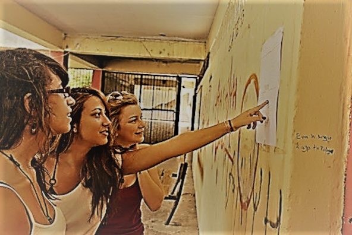
Από το Υπουργείο Παιδείας, Θρησκευμάτων και Αθλητισμού ανακοινώνονται τα αποτελέσματα για την εισαγωγή υποψηφίων στην Τριτοβάθμια Εκπαίδευση, μέσω πανελλαδικών εξετάσεων ΓΕΛ - ΕΠΑΛ και μέσω της ειδικής κατηγορίας υποψηφίων με σοβαρές παθήσεις καθώς και τα αποτελέσματα για την εισαγωγή υποψηφίων στα Δημόσια ΙΕΚ - ΣΑΕΚ, μέσω του παράλληλου μηχανογραφικού δελτίου και δίνονται επιπλέον πληροφορίες για τις διαδικασίες επιλογής τους.
Ύλη Πανελλαδικών 2026
Πανελλαδικές 2026, 18 Οκτ, 2026
Καθορισμός εξεταστέας ύλης για το έτος 2026 για τα μαθήματα που εξετάζονται πανελλαδικά για την εισαγωγή στην Τριτοβάθμια Εκπαίδευση αποφοίτων Γ’ τάξης Ημερησίου Γενικού Λυκείου και Γ’ τάξης Εσπερινού Γενικού Λυκείου. Κατεβάστε την ύλη από τον παρακάτω σύνδεσμο που παραπέμπει στην website του Υπουργείου Παιδείας.
Οι σχολές ανά επιστημονικό πεδίο σύμφωνα με το μηχανογραφικό του 2025
Πανελλαδικές 2026, 18 Οκτ, 2026
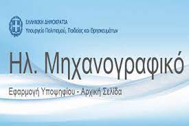
Κάθε επιστημονικό πεδίο αντιστοιχεί σε ένα σύνολο από τμήματα ή σχολές που μπορεί ένας μαθητής ή μια μαθήτρια να δηλώσει στο μηχανογραφικό της.
Κάθε μαθητής/τρια μπορεί να δηλώσει μόνο ένα επιστημονικό πεδίο.
Η επιλογή του σωστού επιστημονικού πεδίου και κατά συνέπεια του σωστού τμήματος είναι πολύ κρίσιμη για την μελλοντική προοπτική του μαθητή. Για το Μηχανογραφικό του 2025 πατήστε τον παρακάτω σύνδεσμο.
Εκεί θα βρείτε όλες τις σχολές ανά επιστημονικό πεδίο...
Τα Θέματα των Πανελλαδικών Εξετάσεων
Πανελλαδικές 2026, 18 Οκτ , 2026
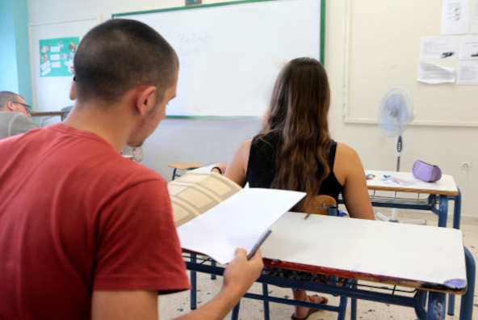
Για να αναζητήσετε, να δείτε και να λύσετε τα θέματα που έπεσαν στις πανελλαδικές εξετάσεις των προηγούμενων ετών μπορείτε να ανατρέξετε στην σχετική πύλη του Υπουργείου Παιδείας
Στον σύνδεσμο που ακολουθεί θα βρείτε τα θέματα για όλες τις περιόδους και όλα τα πανελλαδικώς εξεταζόμενα μαθήματα...
Το παράλληλο μηχανογραφικό δελτίο
Πανελλαδικές 2026, 18 Οκτ, 2026
Η Επαγγελματική Κατάρτιση αποτελεί μια σημαντική εκπαιδευτική διαδρομή, με δυναμικές επαγγελματικές προοπτικές. Με τη συνολική αναβάθμιση της Επαγγελματικής Εκπαίδευσης και Κατάρτισης, αναδεικνύουμε στην πραγματικότητα τους πολλαπλούς εκπαιδευτικούς δόμους που μπορούν να ακολουθήσουν οι νέες και οι νέοι μας, υπηρετώντας τις κλίσεις, τις δεξιότητές τους και αυξάνοντας την πιθανότητα της επαγγελματικής τους καταξίωσης.
Οδηγός Σπουδών ΓΕΛ 2024
Εκπαίδευση, 28 Σεπτ, 2023

Για τους μαθητές και τις μαθήτριες που ξεκινάνε την μαθητική τους ζωή στην Α' Τάξη του Γενικού Ημερήσιου Λυκείου και θέλουν να μάθουν πώς λειτουργεί το Λύκειο. Γιατί η έγκυρη και η εκ των προτέρων ενημέρωση κατά την είσοδό σας στο Λύκειο θα διευκολύνει την μαθητική σας ζωή και την λήψη των σωστών επιλογών σας. Καλύπτονται τα παρακάτω θέματα:
- διδασκόμενα μαθήματα,
- γραπτώς εξεταζόμενα μαθήματα,
- ομάδες προσανατολισμού
- τρόπος εξέτασης και βαθμολόγησης των μαθητών
- τράπεζα θεμάτων
- προαγωγικές εξετάσεις
- μέθοδος υπολογισμού του βαθμού
- αργίες, εκδρομές, περίπατοι, απουσίες κτλ.
Κουμουνδούρος Γιάννης
Ύλη και οδηγίες διδασκαλίας μαθημάτων
Εκπαίδευση, 12 Οκτ, 2023
Οδηγίες για την διδασκαλία όλων των μαθημάτων του Γυμνασίου και Λυκείου για το σχολικό έτος 2023-2024.
Στον παρακάτω σύνδεσμο που παραπέμπει στην ιστοσελίδα της Διεύθυνση Δευτεροβάθμιας Εκπαίδευσης Φλώρινας θα βρείτε αναλυτικές πληροφορίες σχετικά με την διδασκαλία και την ύλη κάθε μαθήματος του Γυμνασίου και του Λυκείου για το σχολικό έτος 2023-2024.
Εδώ θα βρείτε ακόμα την ύλη για τα μαθήματα των Α, Β, Γ τάξεων του Γενικού Λυκείου που εξετάζονται γραπτώς στις προαγωγικές και απολυτήριες εξετάσεις για το σχολικό έτος 2023-2024, αλλά και την ύλη για τα μαθήματα που εξετάζονται πανελλαδικά για την εισαγωγή στην Τριτοβάθμια Εκπαίδευση αποφοίτων Γ΄ τάξης Ημερησίου Γενικού Λυκείου και Γ΄ τάξης Εσπερινού Γενικού Λυκείου
Εικονικά εργαστήρια θετικών επιστημών από το PhET
Εκπαίδευση, 12 Οκτ, 2023
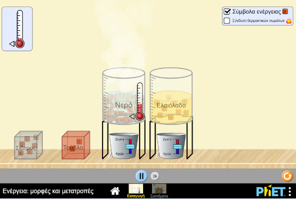
Είναι πλέον η τελευταία τάση στην εκπαίδευση των θετικών επιστημών, των μαθηματικών και όχι μόνο, να χρησιμοποιούμε τα εικονικά εργαστήρια.
Δηλαδή στον χώρο του ο μαθητής ή η μαθήτρια με την σωστή καθοδήγηση αρχικά, αλλά και ανεξάρτητα αργότερα, να πειραματιστεί με υλικά αλλά και έννοιες που μπορεί να είναι δυσπρόσιτες ακόμα και σε ένα μεγάλο εργαστήριο φυσικών επιστημών.
Αυτό είναι εύκολο με την χρήση ηλεκτρονικών προγραμμάτων που προσομοιώνουν ένα κανονικό εργαστήριο με την βοήθεια του διαδικτύου και ενός υπολογιστή ή ενός κινητού.
Με την χρήση των εργαστηρίων ενθαρρύνεται η επιστημονική έρευνα, η διαδραστικότητα, το αόρατο γίνεται ορατό, καταδεικνύονται με οπτικό τρόπο τα αφηρημένα νοητικά μοντέλα και καθοδηγείται ο μαθητής στην παραγωγική εξερεύνηση.
Ένα τέτοιο εργαστήριο διατίθεται από το Πανεπιστήμιο του Colorado και για την Ελληνική γλώσσα στον παρακάτω διαδικτυακό τόπο.
Η Εξεταστέα Ύλη των Προαγωγικών Εξετάσεων του 2024
Εκπαίδευση, 21 Αυγ, 2023
Καθορισμός εξεταστέας ύλης για τα μαθήματα των Α’, Β’ και Γ’ τάξεων Γενικού Λυκείου που εξετάζονται γραπτώς στις προαγωγικές και απολυτήριες εξετάσεις για το σχολικό έτος 2023-2024
- Αρχαία Ελληνική Γλώσσα και Γραμματεία Α', Β', Γ' Τάξης Γενικού Λυκείου
- Νεοελληνική Γλώσσα και Λογοτεχνία Α', Β', Γ' Τάξης Γενικού Λυκείου
- Λατινικά Β', Γ' Τάξης Γενικού Λυκείου
- Ιστορία Α' Β', Γ' Τάξης Γενικού Λυκείου
- Μαθηματικά: Άλγεβρα και Γεωμετρία Α', Β', Γ' Τάξης Γενικού Λυκείου
- Φυσική Α', Β', Γ' Τάξης Γενικού Λυκείου
- Χημεία Α', Γ' Τάξης Γενικού Λυκείου
- Βιολογία Β', Γ' Τάξης Γενικού Λυκείου
- Αγγλικά Α', Β' Τάξης Γενικού Λυκείου
- Πληροφορική Γ' Τάξης Γενικού Λυκείου
- Οικονομία Γ' Τάξης Γενικού Λυκείου
Για την ύλη των μαθημάτων που εξετάζονται και σε Πανελλαδικό επίπεδο βλέπε το σχετικό άρθρο...
Τράπεζα θεμάτων 2023-24
Εκπαίδευση, 19 Οκτ, 2023
Η Τράπεζα θεμάτων είναι μία συλλογή από ασκήσεις που αποτελούνται από τις εκφωνήσεις μαζί με τις λύσεις τους και έχουν εκδοθεί από το Ινστιτούτο Εκπαιδευτικής Πολιτικής (ΙΕΠ).
Αφορά τα γραπτώς εξεταζόμενα μαθήματα στις Προαγωγικές εξετάσεις των Α' Β' Γ' Τάξεων του Λυκείου (ΓΕΛ, ΕΠΑΛ, ΕΝΕΕΓΥΛ).
Για σχετικές αποφάσεις με όλα τα θέματα της Τράπεζας Θεμάτων μπορείτε να βρείτε στον Ιστότοπο της Δευτεροβάθμιας Εκπαίδευσης Φλώρινας, στον παρακάτω σύνδεσμο...
Για να δείτε, να κατεβάσετε αλλά και να λύσετε τα θέματα της τράπεζας που σας αφορούν μπορείτε να τα βρείτε στον Ιστότοπο του ΙΕΠ...
Για περισσότερες πληροφορίες σχετικά με την Τράπεζα θεμάτων αλλά και τον τρόπο λειτουργίας του ΓΕΛ μπορείτε να βρείτε και στο παρακάτω άρθρο (Οδηγός Σπουδών ΓΕΛ 2024) ...
Μαθηματικά Α Λυκείου
Κουμουνδούρος Γιάννης, Μέρος Α, 13 Δεκ, 2023
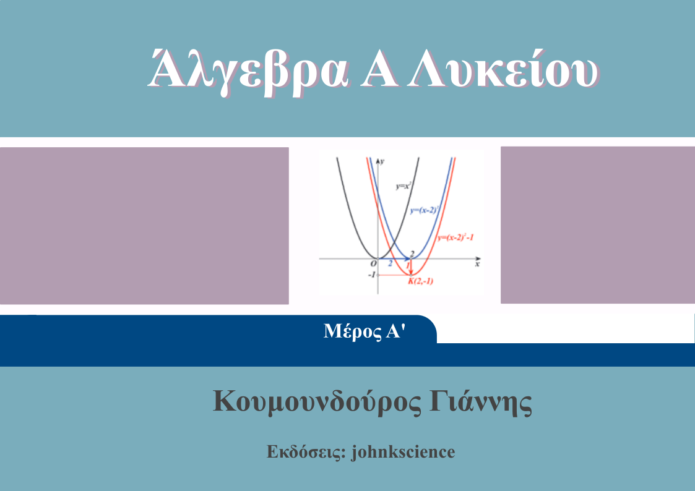
Θεωρώ ότι η ύλη της Α Λυκείου όπως έχει αυτή εμπλουτιστεί με την Τράπεζα Θεμάτων είναι αρκετά εκτενής και ο χρόνος εκμάθησης της μικρός.
Επομένως, αποφάσισα να διδάξω σε πρώτη φάση την θεωρία και τις ασκήσεις του σχολικού βιβλίου με όσο μεγαλύτερη λεπτομέρεια γίνεται, χωρίς πλατειασμούς σε άλλα πεδία . Εξάλλου αυτή είναι και η εξεταστέα ύλη.
Στο αρχείο που ακολουθεί έχουμε ένα βοήθημα με την θεωρία και τις ασκήσεις του σχολικού βιβλίου που παράλληλα με τα δια ζώσεις μαθήματα οι μαθητές και οι μαθήτριες καλούνται να κατακτήσουν τον μαθηματικό φορμαλισμό και τον αφαιρετικό τρόπο γραφής ο οποίος είναι πρωτόγνωρος για αυτούς. Για τον λόγο αυτό έχουμε εμπλουτίσει την θεωρία και τις ασκήσεις με "περιττές", αν το δεις με καθαρά μαθηματικό τρόπο, λεπτομέρειες αλλά, πολύ σημαντικές για ανθρώπους που πρωτοασχολούνται με τα μαθηματικά.
Θεωρία και Λύσεις του Σχολικού ΒιβλίουΣε επόμενη φάση διδάσκω τις ασκήσεις της Τράπεζας Θεμάτων. Η τράπεζα θεμάτων είναι μια εκτενής συλλογή ανακατεμένων ασκήσεων από όλη την ύλη. Για τον λόγο αυτό προσπαθήσαμε να τις κατατάξουμε σε κατηγορίες κυρίως ανάλογα με τα κεφάλαια της διδασκόμενης ύλης ώστε οι μαθητές να έχουν την ευκαιρία να τις μελετήσουν κατά την διάρκεια της σχολικής χρονιάς. Μέρος αυτής της προσπάθειας βλέπουμε στο παρακάτω αρχείο.
Τράπεζα Θεμάτων, Μέρος ΑΦυσικά, στην ιστοσελίδα που ακολουθεί, έχω αναπτύξει μια μηχανή αναζήτησης που μπορεί να κατατάξει αυτές τις ασκήσεις με διάφορους τρόπους που θεωρώ προσφιλείς για την διεξαγωγή της εκπαιδευτικής διαδικασίας.
Τράπεζα Θεμάτων, Μηχανή ΑναζήτησηςΜαθηματικά Γ Γυμνασίου
Κουμουνδούρος Γιάννης, Γ Γυμνασίου, 13 Δεκ, 2023
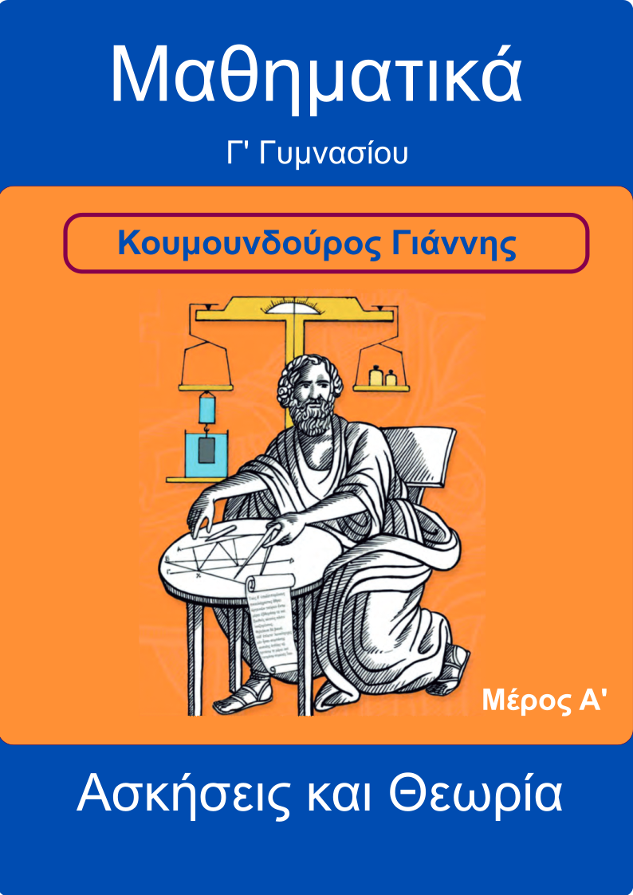
Στα Μαθηματικά της Γ Γυμνασίου θα ολοκληρώσετε έναν κύκλο μαθημάτων που έχει ξεκινήσει αρκετές τάξεις νωρίτερα, που σκοπό έχουν να σας μάθουν να χειρίζεστε με άνεση τις μαθηματικές πράξεις.
Στο αρχείο που ακολουθεί έχουμε ένα βοήθημα με την κατάλληλη θεωρία που καλύπτει ακόμα και τα ποιο απλά θέματα, τις ασκήσεις του σχολικού βιβλίου αλλά και συμπληρωματικές ασκήσεις και κριτήρια αξιολόγησης, ώστε παράλληλα με τα δια ζώσεις μαθήματα να γίνεται άριστοι στα Μαθηματικά.
Αυτό το βοήθημα είναι διαβαθμισμένης δυσκολίας και απευθύνεται σε όλους τους μαθητές, τόσο σε αυτούς που γνωρίζουν ικανοποιητικά τα θέματα που αναπτύσσονται στην αντίστοιχη ύλη αλλά και σε μαθητές που για διάφορους λόγους αποφάσισαν τώρα να βελτιώσουν την απόδοσή τους.
Θεωρία και Ασκήσεις, Μέρος ΑΜαθηματικά Β Γυμνασίου
Κουμουνδούρος Γιάννης, B Γυμνασίου, 13 Δεκ, 2023
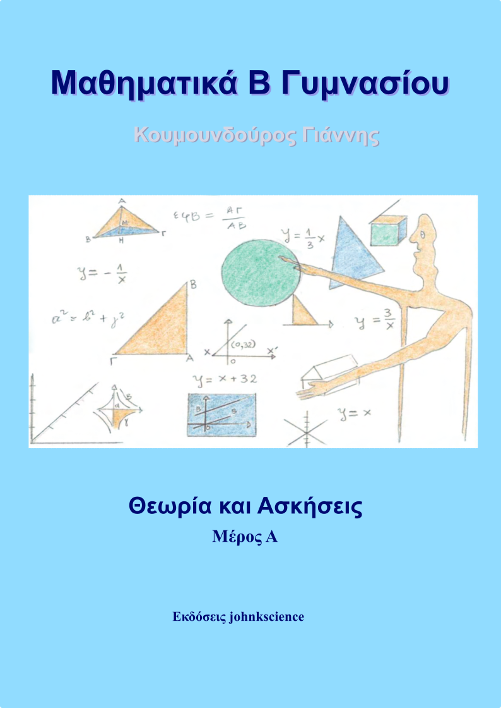
Στα Μαθηματικά της B Γυμνασίου θα γνωριστείτε καλύτερα με πολύ ενδιαφέροντα θέματα από τον τομέα των Μαθηματικών. Θα καταλάβετε ότι τα Μαθηματικά διέπονται από απλούς, λίγους και χωρίς εξαιρέσεις κανόνες, τους οποίους όταν τους μάθετε θα γίνετε άριστοι/τες!
Γνωρίζοντας ότι σας αρέσει να χρησιμοποιείτε τον υπολογιστή και το κινητό σας σας, έχουμε κατασκευάσει ένα διαδικτυακό τόπο που περιέχει την θεωρία του μαθήματος με απλό τρόπο αλλά και ασκήσεις διαβαθμισμένης δυσκολίας που απευθύνονται σε όλους τους μαθητές.
Στον διαδικτυακό αυτό τόπο θα βρείτε επίσης μία πρωτοποριακή σειρά από
Διαδικτυακά Quizzesπου συμπληρώνετε στον υπολογιστή σας ή στο κινητό σας και μπορείτε να αξιολογήσετε την επίδοσή σας άμεσα!
Διαδικτυακό ΒοήθημαΦυσικά, όλα τα παραπάνω μπορείτε και να τα έχετε και σε έντυπη μορφή. Στο αρχείο που ακολουθεί θα βρείτε σε μορφή Α4 την θεωρία, τις ασκήσεις αλλά και τα σχετικά κριτήρια αξιολόγησης.
Έντυπη μορφή ΒοηθήματοςΦυσική Γ' Γυμνασίου, 1o Κεφάλαιο
Κουμουνδούρος Γιάννης, 13 Δεκ, 2023
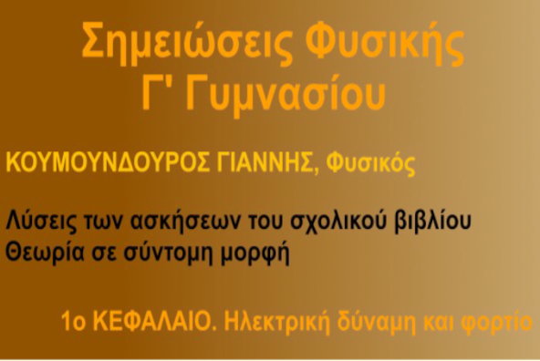
Οι σημειώσεις αυτές προορίζονται για τους μαθητές της Γ' Γυμνασίου. Αποτελούνται από δύο μέρη. Στο πρώτο μέρος, θα βρείτε την θεωρία του σχολικού βιβλίου σε σύντομη μορφή και στο δεύτερο μέρος θα βρείτε αναλυτικά τις απαντήσεις στις ερωτήσεις και ασκήσεις του σχολικού βιβλίου. Οι σημειώσεις αυτές είναι προϊόν πολυετούς διδακτικής εμπειρίας.
Το έγγραφο που έχετε μπροστά σας είναι ειδικά κατασκευασμένο για ανάγνωση στην οθόνη ενός συνηθισμένου Laptop. Το μέγεθος του χαρτιού είναι ειδικά σχεδιασμένο για την πλήρη εμφάνιση κάθε σελίδας στην οθόνη. Επίσης στην κεφαλίδα θα βρείτε συνδέσμους προς τον πίνακα περιεχομένων και το αλφαβητικό ευρετήριο το οποίο σας προτρέπω να χρησιμοποιήσετε κατά την μελέτη σας.
Φιλικά, Κουμουνδούρος Γιάννης, Φυσικός
Φύλλα σύντομης βοήθειας. Φυσική Προσανατολισμού Γ' Λυκείου - 2024
Κουμουνδούρος Γιάννης, 13 Δεκ, 2023
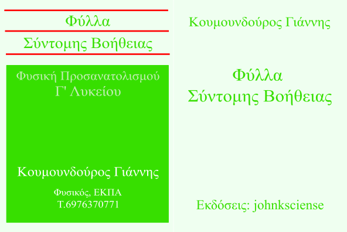
Κάθε σελίδα περιλαμβάνει την ύλη ενός κεφαλαίου για τους μαθητές και τους εκπαιδευτικούς.
Χρήσιμα για την επανάληψη και την απομνημόνευση του μαθήματος. Κάθε φύλλο σας υπενθυμίζει με σύντομο τρόπο την θεωρία και τις τεχνικές επίλυσης των ασκήσεων. Πολύ χρήσιμα όταν η ύλη μεγενθύνεται και πρέπει να γίνει μια προσπάθεια να συστηματοποιηθεί.
- Ταλαντώσεις
- Κύματα
- Ηλεκτρομαγνητισμός
- Κρούσεις
- Στερεό
- Κβαντομηχανική
Μαύρες Τρύπες και Στρεβλώσεις του Χρόνου
Kip S. Thorne, 13 Δεκ, 2023

Ποιο από τα παρακάτω αλλόκοτα αντικείμενα μπορεί πράγματι να υπάρχει στο σύμπαν μας;
- Οι μελανές οπές,
- Οι κοσμικές σκουληκότρυπες,
- Οι χωροχρονικές ανωμαλίες,
- Τα βαρυτικά κύματα,
- Οι μηχανές του χρόνου,
Ένα εξαιρετικό βιβλίο από τον μεγάλο θεωρητικό Φυσικό Kip S. Thorne, καθηγητή της έδρας Richard Feynman στο Τεχνολογικό Ινστιτούτο της Καλιφόρνιας.
Το βιβλίο κυκλοφορεί σε δύο τόμους από τις εκδόσεις Κάτοπτρο
Ο Πλούτος και η Φτώχεια των Εθνών
David S. Landes, 13 Δεκ, 2023
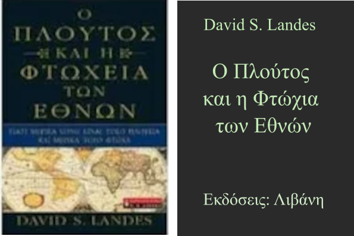
Τα τελευταία εξακόσια χρόνια, οι πιο πλούσιες οικονομίες του κόσμου ήταν κατά κύριο λόγο οι ευρωπαϊκές. Αργά στον 20ό αιώνα, η ισορροπία άρχισε να μετατοπίζεται προς την Ασία, όπου χώρες όπως η Ιαπωνία αύξησαν το οικονομικό τους δυναμικό με ρυθμούς εκπληκτικούς. Γιατί αυτά τα κυρίαρχα έθνη στάθηκαν τόσο ευλογημένα και γιατί τόσα άλλα είναι καθηλωμένα στη φτώχεια;
Μια πολύ ενδιαφέρουσα άποψη για την οικονομική εξέλιξη του κόσμου τα τελαυταία εξακόσια χρόνια από τον David S. Landes, ομότιμο καθηγητή ιστορίας και οικονομικών στο Πανεπιστημιο του Χάρβαρντ.
Εξακόσιες τριάντα τέσσερις καθηλωτικές σελίδες από τις εκδόσεις Λιβάνη.
Ένας διαστημικός περίπατος γεμάτος πρωτιές
www.esa.int, 28 Σεπτ, 2023
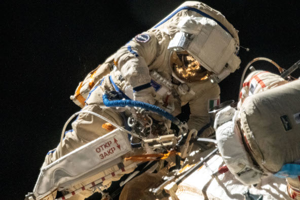
Η εικόνα αυτής της εβδομάδας δείχνει την αστροναύτη της ESA Samantha Cristoforetti να εργάζεται σκληρά στον πρώτο της διαστημικό περίπατο, που διεξήχθη μαζί με τον κοσμοναύτη Oleg Artemyev. Όχι μόνο αυτό, αλλά αυτός ο διαστημικός περίπατος ήταν επίσης ο πρώτος που πραγματοποιήθηκε από μια Ευρωπαία γυναίκα και ο πρώτος που πραγματοποιήθηκε από έναν Ευρωπαίο με διαστημική στολή Orlan από τον Διεθνή Διαστημικό Σταθμό.
Συγχαρητήρια, Σαμάνθα!
Η τελευταία πτήση του Ariane 5
en.wikipedia.org, 16 Οκτ, 2023
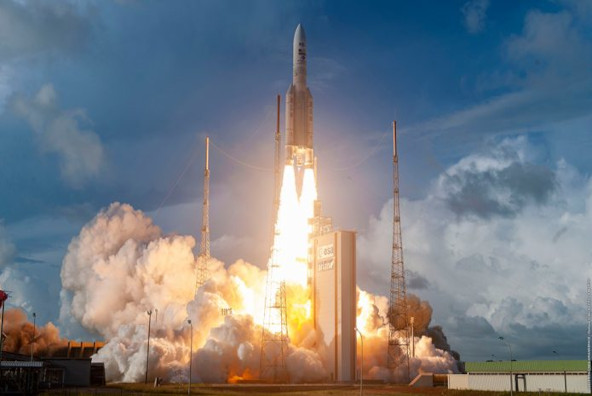
Το Ariane 5 είναι ένας μη επαναχρησιμοποιήσιμος πύραυλος εκτόξευσης για μεταφορά επί πληρωμή φορτίων στο διάστημα. Λειτούργησε και αναπτύχθηκε από την Arianespace για τον Ευρωπαϊκό Οργανισμό Διαστήματος. Βελτιώθηκε σε πέντε διαδοχικές εκδόσεις με τελευταία την 'ES'.
Έχει τρία συστήματα πρόσδεσης φορτίων, με τα οποία μπορεί να μεταφέρει μέχρι 2 μεγάλους ή μέχρι 3 μιρότερους ή μέχρι 8 πολύ μικρούς δορυφόρους. Το κόστος κάθε εκτόξευσης μπορεί να φτάσει τα 150-200 εκατομμύρια ευρώ (2016).
Έχει ύψος 46-52m, διάμετρο 5.4m, και μάζα 777 τόνους περίπου. Μόρεί να μεταφέρει μέχρι περίπου 11 τόνους ωφέλιμο φορτίο ανάλογα με την τελική τροχιά πτήσης. Έχει συγκεντρώσει 117 εκτοξεύσεις, 112 από τις οποίες ήταν επιτυχείς, αποδίδοντας ποσοστό επιτυχίας 95,7%. Θα αντικατασταθεί από τον νεότερο μοντέλο Ariane 6. Μεταξύ άλλων μετέφερε και το τηλεσκόποιο Webb στο διάστημα.
Τι ώρα είναι τώρα στον Άρη;
www.ted.com, 28 Σεπτ, 2023
Η Nagin Cox είναι Αρειανή πρώτης γενιάς. Ως μηχανικός διαστημικού σκάφους στο Εργαστήριο Jet Propulsion της NASA, η Cox εργάζεται στην ομάδα που διαχειρίζεται τα ρόβερ των Ηνωμένων Πολιτειών στον Άρη. Αλλά το να δουλεύεις από τις 9 ως τις 5 σε έναν άλλο πλανήτη -- του οποίου η ημέρα είναι 40 λεπτά μεγαλύτερη από τη Γη -- έχει ιδιαίτερες, συχνά κωμικές προκλήσεις.
Παρακολουθήστε αυτό το επεισόδιο από την εκπομπή του TED! Υπάρχει η δυνατότητα και για ελληνικούς υπότιτλους.
Οι Πλανήτες
www.youtube.com, 16 Οκτ, 2023
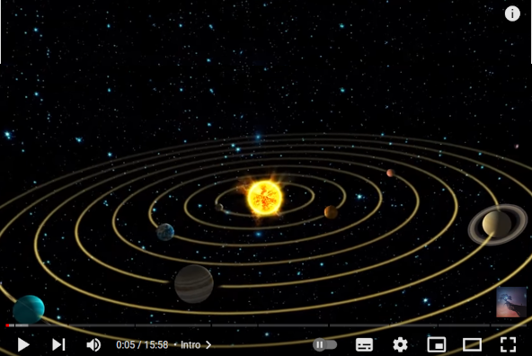
Ένα ταξίδι στο ηλιακό μας σύστημα σε όλους τους επιβεβαιωμένους πλανήτες. Αυτοί οι καταπληκτικοί κόσμοι μας δείχνουν ένα μικρό μέρος από το τι είναι δυνατό στην τεράστια έκταση του χώρου και του χρόνου.
Θα επισκεφτούμε τον γεμάτο κρατήρες Ερμή, την θερμή Αφροδίτη, τον πλανήτη μας, τον κόκκινο πλανήτη Άρη, τον γιγαντιαίο Δία, τον όμορφο Κρόνο, καθώς και τους παγωμένους γίγαντες Ουρανό και Ποσειδώνα.
Μία ταινία μικρού μήκους (περίπου 15 λεπτών) στην Αγγλική γλώσσα με Ελληνικούς υπότιτλους (στην έκδοση για υπολογιστή) και μαγευτικές εικόνες.
Αρχαία Ελληνική Τεχνολογία
www.noesis.edu.gr, 16 Οκτ, 2023
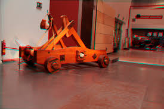
Το Κέντρο Διάδοσης Επιστημών και Μουσείο Τεχνολογίας - ΝΟΗΣΙΣ βρίσκεται στην Θεσσαλονίκη και είναι ένας πολυχώρος όπου διαθέτει μεταξύ άλλων:
- Πλανητάριο 150 θέσεων, με σφαιρική οθόνη 360 μοιρών,
- Κοσμοθέατρο, με την μεγαλύτερη επίπεδη οθόνη στην Ελλάδα,
- Προσομοιωτή, 18 θέσεων για προβολή τρισδιάστατης εικόνας με συγχρονισμένη κίνηση της θέσης του θεατή,
- Μουσείο Τεχνολογίας, με διάφορες εκθέσεις μεταξύ άλλων και την έκθεση για την Αρχαία Ελληνική Τεχνολογία
- Περιοδικές εκθέσεις
- και διάφορα Εκπαιδευτικά Προγράμματα για παιδιά και εφήβους.
Στην έκθεση για την Αρχαία Ελληνική Τεχνολογία παρουσιάζονται ομοιώματα από τους τομείς της καθημερινής ζωής στην Αρχαία Ελλάδα, των κατασκευών, της μηχανολογίας, της ναυπηγικής, του πολέμου, των τηλεπικοινωνιών, κ.α.
Περιηγηθείτε διαδικτυακά στον παρακάτω σύνδεσμο...
Σχετικά με εμένα
Κουμουνδούρος Ιωάννης
Φυσικός Ε.Κ.Π.Α.

Εργάζεται ως Καθηγητής θετικών επιστημών στον ιδιωτικό τομέα παραδίδοντας κατ' οίκον μαθήματα από το 2002
T. 6976370771
E-mail: johnkscience@yahoo.com
Ενδιαφέροντα
- Γράφει άρθρα επιστημονικού ενδιαφέροντος και άρθρα σχετικά με την εκπαίδευση που τα δημοσιεύει στο διαδίκτυο.
- Συντηρεί και γράφει στην διαδικτυακή σελίδα johnkscience.blog αλλά και την johnkscience.notes
- Ενδιαφέρεται για τον προγραμματισμό και ιδιαίτερα για την JAVA, JavaScript, HTML, CSS
- Μου αρέσει να διαβάζω βιβλία και μάλιστα ενδιαφέρομαι για την Φυσική, Μαθηματικά, Φιλοσοφία, Προγραμματισμός, Επιστημονική φαντασία κ.α.
- Επιμόρφωση και δια βίου μάθηση
- Συγγραφή σημειώσεων και μικρών βιβλίων σχετικά με τα μαθήματα της Φυσικής, της Χημείας και των Μαθηματικών του Γυμνασίου και του Λυκείου.
Επιμόρφωση στην Κβαντομηχανική
από το Παν/μιο Κρήτης με καθηγητή τον κύριο Στέφανο Τραχανά


Πρόσφατες Δημοσιεύσεις
Η διαλειμματική επανάληψη και το πνεύμα της άσκησης
Μία απατηλή αίσθηση μεταξύ των διδασκομένων, στην οποία έχουμε όλοι υποπέσει, είναι το "μαθαίνω μία και έξω!" χωρίς την χρήση της επαναληπτικής μεθόδου που είναι τόσο κουραστική. Η μάθηση συνίσταται στο να δημιουργήσεις μία σύνδεση μεταξύ της νέας πληροφορίας και αυτών των πληροφοριών που είναι μόνιμα αποθηκευμένες στην μνήμη μας. Η νέα πληροφορία πρέπει να περάσει από την βραχυπρόθεσμη μνήμη στην μνήμη μακράς διαρκείας. Για να αποθηκευτεί μακροπρόθεσμα αλλά και να διατηρηθεί αυτή η πληροφορία στην μνήμη μας μπορούμε να χρησιμοποιήσουμε την επαναληπτική μέθοδο και μάλιστα στην αποδοτικότερή της μορφή που ονομάζεται διαλειμματική μάθηση.
Εικονικά εργαστήρια
Είναι πλέον η τελευταία τάση στην εκπαίδευση των θετικών επιστημών, των μαθηματικών και όχι μόνο, να χρησιμοποιούμε τα εικονικά εργαστήρια. Δηλαδή στον χώρο του ο μαθητής ή η μαθήτρια με την σωστή καθοδήγηση αρχικά, αλλά και ανεξάρτητα αργότερα, να πειραματιστεί με υλικά αλλά και έννοιες που μπορεί να είναι δυσπρόσιτες ακόμα και σε ένα μεγάλο εργαστήριο φυσικών επιστημών. Αυτό είναι εύκολο με την χρήση ηλεκτρονικών προγραμμάτων που προσομοιώνουν ένα κανονικό εργαστήριο με την βοήθεια του διαδικτύου και ενός υπολογιστή ή ενός κινητού. Με την χρήση των εργαστηρίων ενθαρρύνεται η επιστημονική έρευνα, η διαδραστικότητα, το αόρατο γίνεται ορατό, καταδεικνύονται με οπτικό τρόπο τα αφηρημένα νοητικά μοντέλα και καθοδηγείται ο μαθητής στην παραγωγική εξερεύνηση. Ένα τέτοιο εργαστήριο διατίθεται από το αυτόν εδώ τον διαδικτυακό τόπο...
Ο ζωολογικός κήπος των υποατομικών σωματιδίων
Η ατομική δομή της ύλης συνίσταται στο γεγονός ότι η ύλη αποτελείται από διακριτά θεμελιώδη σωμάτια τα οποία δεν τέμνονται περισσότερο και μεταξύ τους υπάρχει κενό. Σαν φιλοσοφική ιδέα ξεκίνησε από τον Λεύκιππο και τον Δημόκριτο (4ος αιώνας π.Χ.). Για πολλούς αιώνες ξεχάστηκε και αναβίωσε στις αρχές του 19ου αιώνα από τον Ντάλτον (Dalton). Στις αρχές του 20ου αιώνα οι ανακαλύψεις ήταν ραγδαίες με πολύ σημαντικά πειράματα, με αποτέλεσμα να θεμελιωθεί η σύγχρονη φυσική. Σήμερα γνωρίζουμε ότι η ύλη αποτελείται από τουλάχιστον 12 σωμάτια ύλης και άλλα τόσα αντισωμάτια που αποτελούν την αντιύλη. Αλλά ας δούμε τα πράγματα πιο αναλυτικά...
Ακολουθήστε με
Επικοινωνία: 6976370771
Email: johnkscience@yahoo.com
johnkscience.blog: johnkscience.blog
johnkscience.notes: johnkscience.notes
johnkscience.articles: johnkscience.articles
 Συνδρομή Ροής
Συνδρομή Ροής
Υπάρχει η δυνατότητα να λαμβάνετε τα νέα άρθρα που δημοσιεύονται στο johnkscience.blog την στιγμή που δημοσιεύονται κατευθείαν μέσα από το πρόγραμμα της ηλεκτρονικής αλληλογραφίας και ροών σας.
Για να εγγραφείτε μέσα από το πρόγραμμα ροών σας θα σας ζητηθεί η παρακάτω διεύθυνση ροής.
https://koumoundouros.neocities.org/feed.txt
Εγγραφείτε
Για να εγγραφείτε ώστε να λαμβάνετε στο ηλεκτρονικό σας ταχυδρομείο τα νέα από την εκπαίδευση και τις φυσικές επιστήμες αλλά και το υπόλοιπο εκπαιδευτικό υλικό που αναρτάται στο
johnkscience.blog
συμπληρώστε την παρακάτω φόρμα ή στείλτε μας e-mail στην διεύθυνση:
Για να διακόψετε την συνδρομή σας ακολουθήστε τον επόμενο σύνδεσμο: